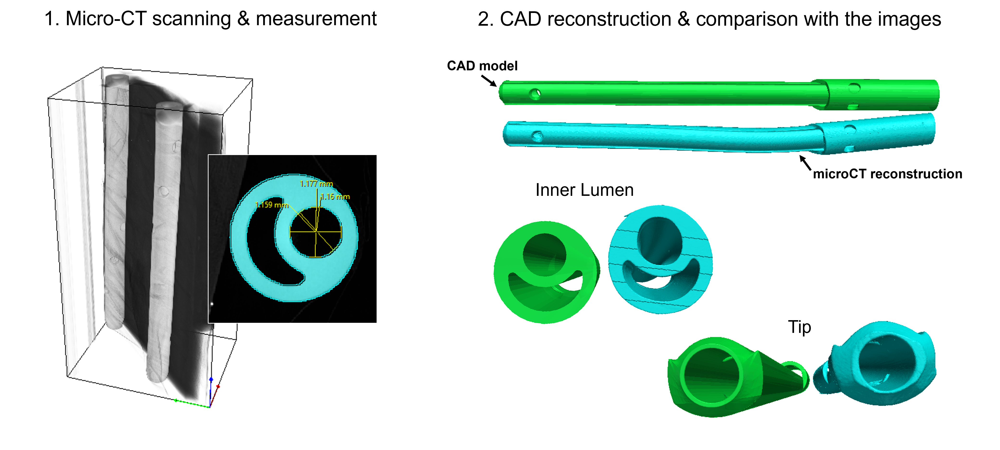
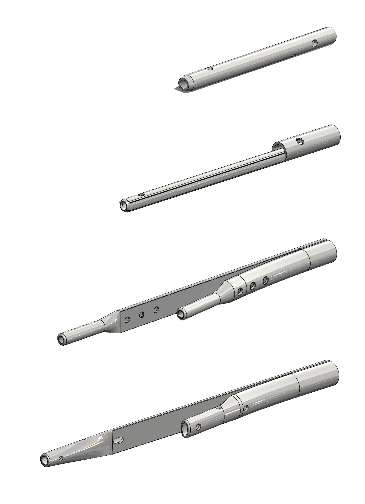
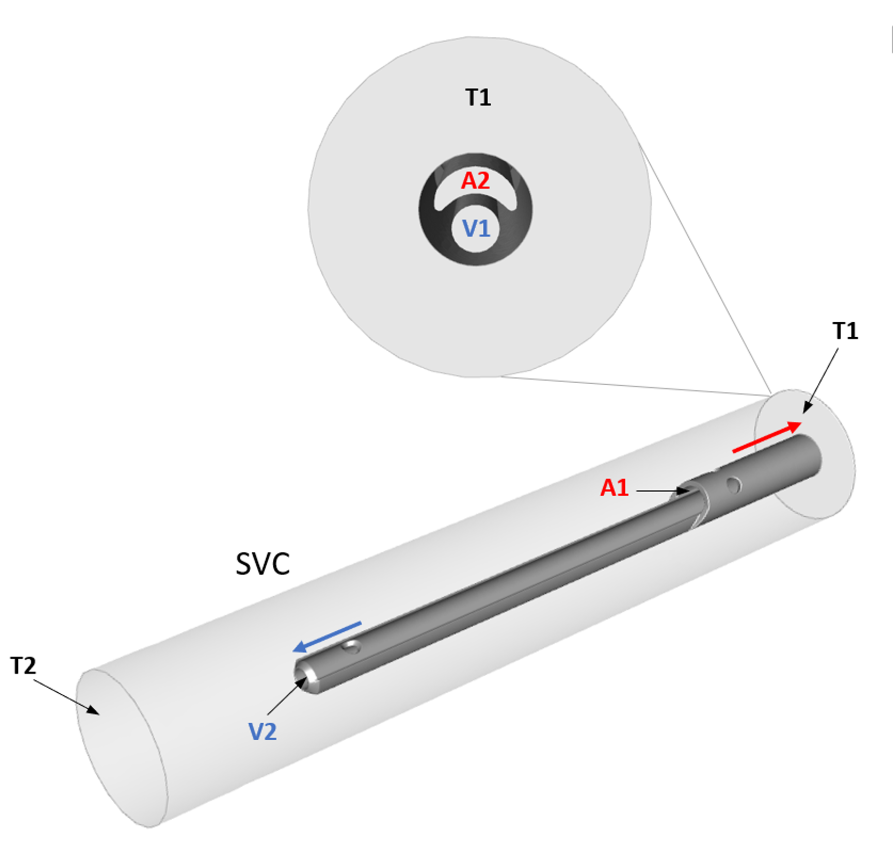
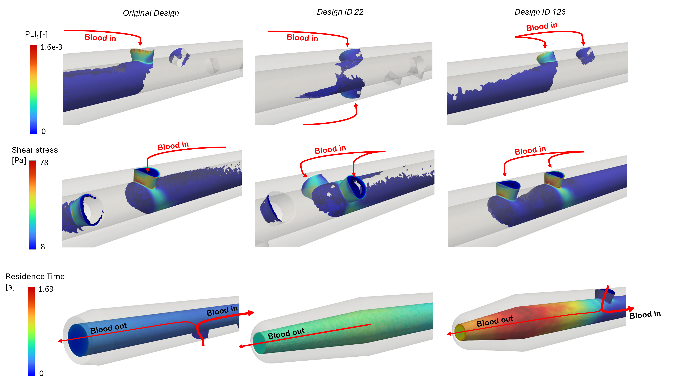
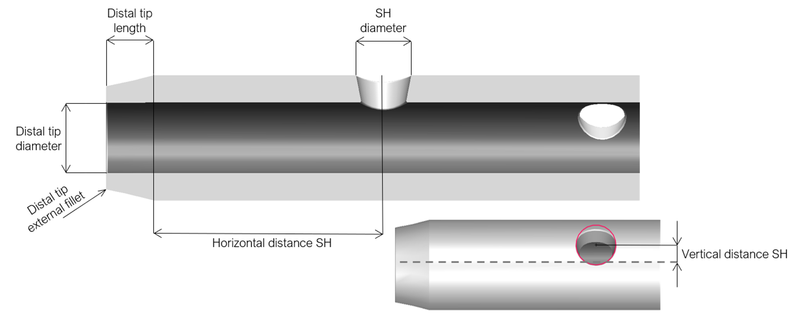
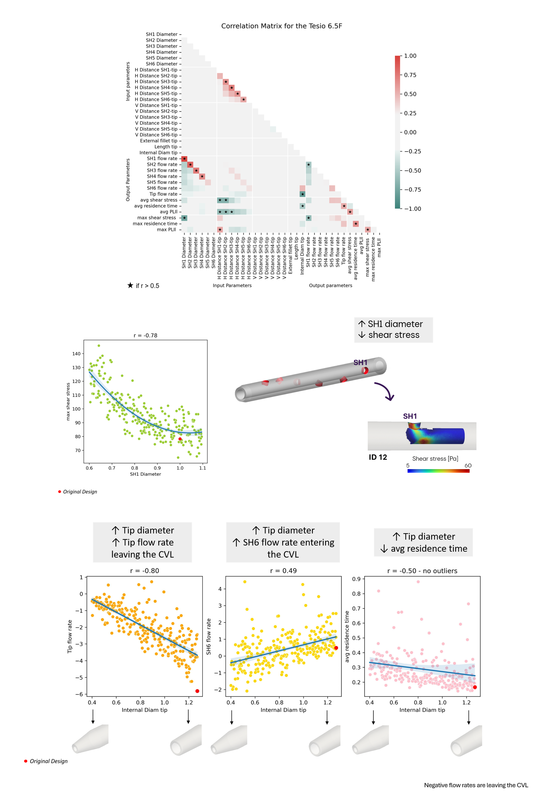

Catheter Design & DOE
The Challenge
Central venous catheters (CVCs) are widely used for paediatric haemodialysis, but their design can lead to unfavourable flow conditions, including stagnation, unbalanced flow distribution and high shear stresses.
This case study combines computational characterisation of existing catheter designs with a systematic exploration of the geometric parameters that influence fluid dynamic performance.
I was Principal Investigator of an NIHR-funded PhD fellowship (grant number: NIHR303049) developing a data-driven approach to investigate current limitations of CVCs for haemodialysis in children and support the development of novel design solutions.
Computational investigation of the haemodynamics shows criticalities of central venous lines used for chronic haemodialysis in children.
View publication ↗
Design Parametrization of Central Venous Catheters for Pediatric Dialysis: Supporting the Quest for the Most Influential Features.
View publication ↗
Workflow
Geometry Reconstruction
High-resolution micro-CT images were used to reconstruct accurate three-dimensional catheter geometries, including the arterial and venous lumens, tips and side holes.
I segmented the micro-CT images and measured geometric features from the segmented models. I used these measurements to create CAD models in SolidWorks for the subsequent CFD analyses.
Rather than using the segmented micro-CT geometries directly, this approach provides accurate and geometrically controlled CAD models that can be easily parametrised and modified during the Design of Experiments (DOE). The CAD-based workflow also facilitates mesh generation.

CAD Design
I created CAD models of four catheters resembling commercially available catheters currently used in paediatric patients.
The catheter features were subsequently parametrised to enable the systematic variation of geometric characteristics such as side holes' diameter and position and geometry of the tip.

CFD Characterisation
The CAD models were imported in Ansys where the fluid domain was created inside the DesignModeler and subsequently meshed using tetrahedral elements. The CFD simulations were set up in Ansys Fluent to investigate flow behaviour under paediatric haemodialysis conditions.
Blood flow distribution, velocity, residence time, shear stress and platelet lysis index were evaluated to compare different catheter designs and identify haemodynamic criticalities.

The analysis showed low-flow regions near the arterial tip and an unbalanced distribution of flow between tip and side holes.

From CFD to Parametrisation
Building on the CFD characterisation, the geometry of the catheter models was parametrised to investigate which design features had the strongest influence on fluid dynamic performance.

Design of Experiments
I developed a Design of Experiments framework in optiSLang to systematically explore the resulting design space and investigate the influence of individual geometric parameters and their interactions.
I used Latin Hypercube Sampling to generate the design points. The sampled geometries were automatically transferred through the CAD and CFD workflow, while Python scripts were used throughout the workflow to support data processing, analysis and automation of tasks.
The analysis considered blood flow rate, shear stress and residence time as performance indicators.

What the Analysis Showed
The DOE identified the proximal side holes as some of the most influential geometric features, affecting both flow rates and shear stress.
The influence of individual features depended on the catheter lumen and operating flow rate.
The findings were translated into practical design recommendations concerning the number, position and diameter of side holes, as well as the diameter and positioning of the tip opening.